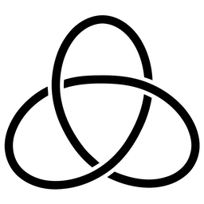

Skip to main content
\(\renewcommand\epsilon\varepsilon \newcommand{\lt}{<} \newcommand{\gt}{>} \newcommand{\amp}{&} \)

Open Algebra and Knots
Matt Salomone
Contents
Prev
Up
Next
Contents
Prev
Up
Next
Front Matter
1
Algebraic Structures
Algebraic Operations
Permutations and Presentations
2
Braids and Rational Tangles
Braids
Rational Tangles
3
Knots and Invariants
Knots and Diagrams
Knot Invariants
4
Keis and Quandles
Keis and Knots
Quandles and Knots
5
Knot Groups
Quandles and Groups
The Group of a Knot
Authored in PreTeXt
Section
3.1
Knots and Diagrams